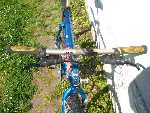

ParaBicychologie
- Accueil >>> Bicyclette tout-terrain Didier Louis
Bicyclette tout-terrain Didier Louis
marque : Didier Louis, marque française.
Cadre : Bik, fabriquant américain.
Équipement : Shimano DX ( Shimano est une marque japonaise ) et Zoom ( tige de selle, potence, guidon. Zoom est une marque taïwanaise. )
Pour lire les essais de ce vélo dans diverses revues de Mountain Bike :
Ci-après, à la suite des photos, vous pouvez lire l'histoire - qui ne manque pas d'intérêt - de ces cadres, et leur lien avec Didier Louis.
Cliquez les vignettes pour les ouvrir en grande taille (s'ouvrent dans une nouvelle fenêtre, sur Picasa)
|  | ||||

|

|
|||
L'histoire des cadres carbones Didier Louis USA inc.
Curieux de connaître l'histoire de ces vélos Didier Louis à cadre en carbone, et après avoir recherché sur internet et trouvé les peu nombreuses informations disponibles sur le sujet, voci donc une synthèse de l'histoire de ces vélos.
Une histoire intéressante, une histoire d'entreprises, de volontés individuelles, une histoire de la technologie du vélo.
En préliminaire, vous trouverez les liens vers les sites internet où nous avons trouvé l'essentiel des informations qui suivent. Ces liens envoient vers les pages où figurent les informations, et non pas vers les pages d'accueil de ces sites.
- Site officiel Aegis ( encore en ligne bien que la marque ait cessé ses activités depuis 2009 )
- bikeforums.net au sujet de Aegis et Trek
- forums.roadbikereview.com un article qui signale la cessation d'activité d'Aegis.
- Brève biographie de Didier Louis sur son site officiel, maintenant dans le business des chevaux de course.
- Patentbuddy.com
- Bizapedia.com
- Plainsite.org
Voici ce qui semblent être les faits, avec quelques questions pendantes, notamment au sujet de Didier Louis, ex-coureur cycliste, vendeur de cycles à Montreuil ( département de la Seine-Saint-Denis en France ), propriétaire de sa propre équipe de coureurs cyclistes, et qui acheta une usine de cadres de vélo en carbone, établie à Van Buren, aux U.S.A.
Tout commença avec Aegis...
Aegis était ( elle a cessé ses activités en 2009 ) une fabrique américaine de structures en composite, établie à Van Buren dans l'état du Maine, aux Etats-Unis. C'est Aegis qui en 1973 fut contratée par Rossignol pour fabriquer des raquettes de tennis.
Aegis fut ensuite contratée par Trek, marque américaine de vélos, pour fabriquer des tubes en fibre de carbone, pour le vélo Trek 2500, sans doute le premier vélo de série à cadre en carbone.
Cherchant à produire des produits plus évolués encore technologiquement, Aegis fabrique en 1986, avec le support de Trek, le premier cadre de vélo monocoque en carbone au monde. Mais peu après les relations de Aegis avec Trek prennent fin.
Aegis breveta un procédé de fabrication des cadres en carbone par moulage, et décida de produire elle même des cadres en carbone, pas vraiment monocoque ( en une seule pièce ), mais constitués d'un ensemble d'éléments ensuite en quelque sorte fusionnés ensemble ainsi que le permet la fibre de carbone. La préoccupation d'Aegis était qu'un cadre fabriqué d'origine d'une seule pièce monocoque ne présenterait peut-être pas tout les qualités de robustesse, de fiabilité et de précision dans l'alignement qu'offrait, dans leur esprit, un cadre assemblé.
Une partie du personnel d'Aegis, qui eux voulaient fabriquer un cadre entièrement monocoque d'origine, quittèrent Aegis et fondèrent l'entreprise Kestrel.
Pour produire et commercialiser ces cadres fabriqués selon leur procédé breveté, les membres d'Aegis - qui au départ répétons-le n'est pas une fabrique de cadres de vélos - fondèrent Graphite Technologies. Et Graphite Technologies fabriqua des cadres en carbone selon son procédé pour Basso, Peugeot, Iron Horse et Racing Bik.
En 1992, le vendeur de cycles français Didier Louis ( qui avait une boutique à Montreuil (93), ainsi que sa propre équipe de coureurs cyclistes ) et qui était l'importateur en France des cadres fabriqués par Graphite Technologies sous la marque Racing Bik et Mountain Bik, respectivement cadre de course et cadre de vélo tout-terrain, acheta l'entreprise Graphite Technologies et constitua l'entreprise Didier Louis Cycles USA Inc, à Van Buren.
Comme il continua de commercialiser les cadres sous les marques Racing Bik and Mountain Bik, on peut penser que ces marques étaient propriétés de Graphite Technology ?
D'après le peu d'infos sur les sites Patentbuddy.com, Bizapedia.com, Plainsite.org, l'entreprise Didier Louis Cycles usa inc apparaît aussi en 1992 comme propriétaire du brevet de fabrication des cadres.
Peu après, environ 1 ou 2 ans semble-t-il, Didier Louis cessa ses activités dans le domaine du cycle et se tourna entièrement vers le business des chevaux de course. Revendit-il Graphite Technologies ? à Aegis ? Revendit-il les brevets ? Ces questions restent en suspens. Mais quoi qu'il en soit, la marque Graphite Technologies disparut, ainsi que Racing Bik et Mountain Bik. Il semble toutefois que les cadres continuèrent pendant quelques temps à être produits, car sur internet on peut voir des cadres Racing Bik avec le logo Aegis ( rappelons qu'à l'époque de Graphite Technologies, Aegis ne commercialisait pas de cadre de vélos sous son nom .)
En 1993 Aegis décida de commercialiser sous son nom sa propre gamme de cadres de vélos.
En 2009 Aegis cessa ses activités.
Ci-après, le même cadre Mountain Bik, mais commercialisé sous le nom de Aegis, donc en 1993 ou après, Aegis ne commercialisant pas de vélos ni de cadres sous son nom avant cette date.
Pour la petite histoire... L'entreprise Aegis était établie dans la petite ville de Van Buren, dans l'état du Maine aux États-Unis. L'état du Maine est celui où on rencontre le plus grand nombre de francophones. La ville de Van Buren, qui compte un peu plus de 2200 habitants, a un pourcentage de francophone de 76% de sa population ! Elle doit son nom au huitième président des États-Unis Martin Van Buren. La ville est située le long du fleuve Saint-Jean, frontière avec le Canada. Vous pouvez voir ci-dessous une vue de la rue principale de la ville de Van Buren.
Website © Copyright - ef. Bicy Gonzo.